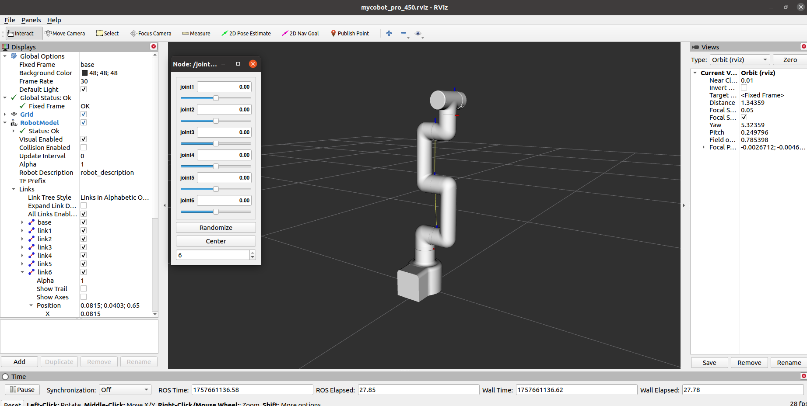

rviz 简介和使用
rviz 是 ROS 中的三维可视化平台。它一方面可以实现外部信息的图形化显示，另一方面也可以通过 rviz 向对象发布控制信息，实现对机器人的监控。
1 安装 rviz 并介绍其界面
安装 ros 时，如果执行的是完全安装，rviz 已经安装，可以尝试直接运行；如果未完全安装，可以单独安装 rviz：
# Ubuntu16.04
sudo apt-get install ros-kinetic-rviz
# Ubuntu18.04
sudo apt-get install ros-melodic-rviz
# Ubuntu20.04
sudo apt-get install ros-noetic-rviz
打开一个新终端（快捷键：Ctrl+Alt+T）并输入以下命令：
roscore
然后打开一个新的终端（快捷键：Ctrl+Alt+T），输入以下命令打开 rviz。
rosrun rviz rviz
# or
rviz
打开 rviz，将显示以下界面：

各个区域介绍
- 左侧有一个显示器列表。显示器是在三维世界中绘图的设备，在显示列表中可能有一些可用选项。
- 顶部是一个工具栏，用户可以使用各种功能按钮选择具有多种功能的工具。
- 中间部分是 3D 视图：这是一个主屏幕，可以在其中查看各种三维数据。三维视图的背景颜色、固定框架、网格等可以在左侧显示的全局选项和网格项目中进行详细设置。
- 下面是时间显示区域，包括系统时间和 ROS 时间。
右侧为观察角度设置区，可设置不同的观察角度。
本部分仅作粗略介绍。如果您想了解更多详情，请访问 用户指南。
2 简单使用
本示例基于您已经完成的 环境搭建，并且您已成功地将公司代码从 GitHub 复制到您的虚拟机。
打开新终端（快捷键：Ctrl+Alt+T
输入命令 配置 ROS 环境。
cd ~/catkin_ws/
source devel/setup.bash
再次输入：
roslaunch mycobot_pro_450 test.launch
打开 rviz，就会得到如下结果：

如果您想了解有关 rviz 的更多信息，请访问 官方文件。